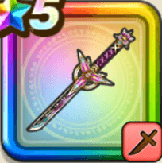

蜃気楼
攻略班 8.5点 / カオスエッジストームフォースモシャス宵断ちの華いきなり分身の術ワイルドバースト
くわしい特徴
【レベル別習得スキル】 Lv1【ニンジャ】すばやさ+10 Lv10カオスエッジ（消費MP：9）混沌の剣技で敵1体に威力175％の斬撃ダメージを与えたまに混乱させる Lv15ストームフォース（消費MP：16）イオ・バギのフォースを得る。両属性の耐性を上げ、一部の攻撃に敵ごとに有効な属性を付加する(効果4ターン) Lv20モシャス（消費MP：最大MPの5%）自分以外の味方1人に変身し、変身中はその味方が持つ武器の習得スキルを一部を除いて使用できるようになる(戦闘中1回のみ使用可能)※効果は5ターン継続 Lv30宵断ちの華（消費MP：55）敵全体に威力540%とランダムな敵に3回威力120%の斬撃ダメージを与える。自分の行動順が早いほど会心の一撃の発生率UP(最大10%) Lv35怪人系へのダメージ+5% Lv40ドラゴン系へのダメージ+5% Lv45攻撃力+12 Lv50いきなり分身の術（消費MP：最大MPの3%）戦闘開始時に最大MPの3%を消費し、自身に分身の術の発動率を+100%にする効果を付与する(効果1ターン) Lv50ワイルドバースト（消費MP：10）攻撃スキルを使用時、そのスキルの属性に応じたバースト効果をたまに敵に付与できるようになる(効果5ターン) 【限界突破スキル】 1凸スキルの斬撃・体技ダメージ+7% 2凸スキルの斬撃・体技ダメージ+7% 3凸スキルの斬撃・体技ダメージ+7% 4凸スキルの斬撃・体技ダメージ+7%